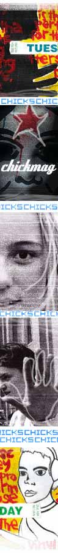

| |
YOU GO, GIRLFRIEND!
| |
Once upon a time - and this ain't no fairytale - the word "chick" was a pretty negative term, a word you'd use to refer to a girl you didn't like or for whom you didn't have a whole lotta respect.
| |
Well, praise be to feminism, hey? For now "chick" is a word that suggests empowerment - of being one hundred percent girl and one hundred percent go-ahead, at the same time.
Not surprising, then, that a magazine called Chick has emerged, to explore that grrrl power even further.
Born in Queensland, but available around Oz, the mag offers a fun look at clothes, relationships and entertainment - like a lot of other female-oriented teen mags - but with the added twist of appealing to girls who like to head into more traditionally male territories of sport and rock music, too.
It's also a mag that celebrates the creativity of the young women who read it - so the marriage of Chick with the noise festival was a logical one.
In June of 2001 we here at noise put out a call to Australians 25 and under to send us Chick-friendly creative work. That meant anything we could reproduce on the pages of a mag... visual art, writing, photography, you name it.
Some artists took advantage of our broad call-out, sending in lots of different styles. Carla Gee's work ranges from crisp black and white photography to clever illustrations created upon her sister's request. Also experimental are the beautiful ink paintings of Lucy Selleck. These were submitted on a selection of curious, rather domestic mediums - lasagne sheets, blocks of balsa wood appropriated from a hallway, strips of canvas found in a dumpster.
One of the really great aspects of the response to the Chick project was that we received work from both boys and girls, and not only teenagers (even though that‚s the magazine‚s official demograpic).
"We launched the Chick project a lot closer to the actual festival date than many of our other noise projects," explains the festival's print producer Tracey Grimson, "but the response was still amazing.
"What was really interesting was that creative types who had already submitted to some of noise's earlier projects sent more stuff in for Chick - like the prolific Millie Fairhall and Laura Thomas, but we also managed to pick up new contributors such as photography based Chloe Nicholet-dit-Felix too.
"That was really exciting for those of us working at noise 'cause it meant that, the closer we got to festival time, the more new people were finding out about noise."
Return to Chick magazine project homepage
|
|
|